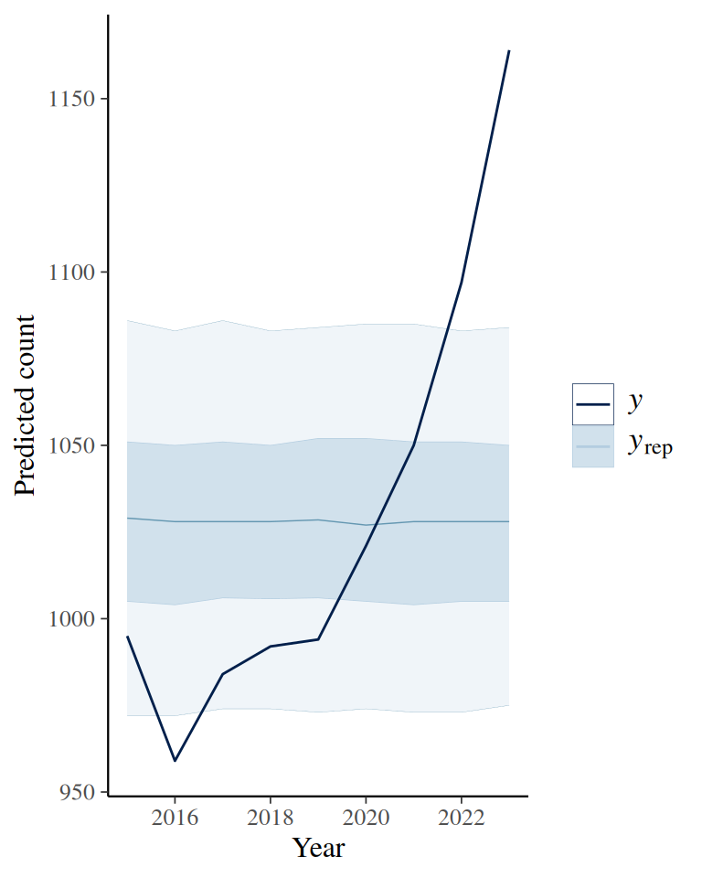

# Import data
fps_dat <- read_csv(
"https://github.com/washingtonpost/data-police-shootings/raw/master/v2/fatal-police-shootings-data.csv"
)6 Poisson Model
I came across this data set from https://andrewpwheeler.com/2021/01/11/checking-a-poisson-distribution-fit-an-example-with-officer-involved-shooting-deaths-wapo-data-r-functions/
As explained here, the data are by the Washington Post in an effort to record every fatal shooting in the United States by a police officer since January 1, 2015.
6.1 Research Question
What’s the rate of fatal police shootings in the United States per year?
6.2 Data Import and Pre-Processing
We first count the data by year
# Create a year column
fps_dat <- fps_dat |>
mutate(year = format(date, format = "%Y"))
# Filter out the latest year
fps_1523 <- filter(fps_dat, year != max(year))
count(fps_1523, year)Our interest is the rate of occurrence of fatal police shootings per year. Denote this as \(\theta\). The support of \(\theta\) is \([0, \infty)\).
A Poisson model is usually a starting point for analyzing count data in a fixed amount of time. It assumes that the data follow a Poisson distribution with a fixed rate parameter: \[P(y \mid \theta) \propto \theta^y \exp(- \theta),\] where the data can be any non-negative integers (no decimals).
6.3 Choosing a Prior
The Gamma distribution has support: \([0, \infty)\), and is a conjugate family to the Poisson model. The Gamma distribution has the form \[ P(\theta) \propto \theta^{a - 1} \exp(-b \theta), \] where \(a\) is the prior incidence rate, and \(b\) is the number of prior data points to control for the prior strength. Here, without much prior knowledge, I would simply guess there is one fatal shooting per state per month, so 600 shootings per year, but my belief is pretty weak, so I will assume a prior \(b\) of 1 / 200 (one observation is one year). The \(a\) will be 600 * \(b\) = 3.
Here’s a plot:
ggplot(data.frame(th = c(0, 2000)), aes(x = th)) +
stat_function(fun = dgamma,
args = list(shape = 3, rate = 1 / 200)) +
labs(y = "", x = expression(theta))
Model Fitting in Stan
data {
int<lower=0> N; // number of observations
array[N] int<lower=0> y; // y
real<lower=0> prior_a; // prior a for gamma
real<lower=0> prior_b; // prior b for gamma
}
parameters {
real<lower=0> theta; // theta parameter
}
model {
// prior: Gamma(3, 1 / 200)
// using conjugacy
theta ~ gamma(prior_a + sum(y), prior_b + N);
}
generated quantities {
real prior_theta = gamma_rng(3, 0.005);
array[N] int prior_ytilde;
array[N] int ytilde;
for (i in 1:N) {
ytilde[i] = poisson_rng(theta);
prior_ytilde[i] = poisson_rng(prior_theta);
}
}6.3.1 Compiling
pois_mod <- cmdstan_model("stan_code/gamma-poisson-pp.stan")6.3.2 Data for Stan
6.3.3 MCMC Sampling
fit <- pois_mod$sample(
fps_standata,
refresh = 500 # show progress every 500 iterations
)Running MCMC with 4 sequential chains...
Chain 1 Iteration: 1 / 2000 [ 0%] (Warmup)
Chain 1 Iteration: 500 / 2000 [ 25%] (Warmup)
Chain 1 Iteration: 1000 / 2000 [ 50%] (Warmup)
Chain 1 Iteration: 1001 / 2000 [ 50%] (Sampling)
Chain 1 Iteration: 1500 / 2000 [ 75%] (Sampling)
Chain 1 Iteration: 2000 / 2000 [100%] (Sampling) Chain 1 Informational Message: The current Metropolis proposal is about to be rejected because of the following issue:Chain 1 Exception: gamma_lpdf: Random variable is inf, but must be positive finite! (in '/tmp/Rtmptr69JG/model-2756e8977df2.stan', line 13, column 2 to column 47)Chain 1 If this warning occurs sporadically, such as for highly constrained variable types like covariance matrices, then the sampler is fine,Chain 1 but if this warning occurs often then your model may be either severely ill-conditioned or misspecified.Chain 1 Chain 1 Informational Message: The current Metropolis proposal is about to be rejected because of the following issue:Chain 1 Exception: gamma_lpdf: Random variable is inf, but must be positive finite! (in '/tmp/Rtmptr69JG/model-2756e8977df2.stan', line 13, column 2 to column 47)Chain 1 If this warning occurs sporadically, such as for highly constrained variable types like covariance matrices, then the sampler is fine,Chain 1 but if this warning occurs often then your model may be either severely ill-conditioned or misspecified.Chain 1 Chain 1 Informational Message: The current Metropolis proposal is about to be rejected because of the following issue:Chain 1 Exception: gamma_lpdf: Random variable is inf, but must be positive finite! (in '/tmp/Rtmptr69JG/model-2756e8977df2.stan', line 13, column 2 to column 47)Chain 1 If this warning occurs sporadically, such as for highly constrained variable types like covariance matrices, then the sampler is fine,Chain 1 but if this warning occurs often then your model may be either severely ill-conditioned or misspecified.Chain 1 Chain 1 Informational Message: The current Metropolis proposal is about to be rejected because of the following issue:Chain 1 Exception: gamma_lpdf: Random variable is inf, but must be positive finite! (in '/tmp/Rtmptr69JG/model-2756e8977df2.stan', line 13, column 2 to column 47)Chain 1 If this warning occurs sporadically, such as for highly constrained variable types like covariance matrices, then the sampler is fine,Chain 1 but if this warning occurs often then your model may be either severely ill-conditioned or misspecified.Chain 1 Chain 1 Informational Message: The current Metropolis proposal is about to be rejected because of the following issue:Chain 1 Exception: gamma_lpdf: Random variable is inf, but must be positive finite! (in '/tmp/Rtmptr69JG/model-2756e8977df2.stan', line 13, column 2 to column 47)Chain 1 If this warning occurs sporadically, such as for highly constrained variable types like covariance matrices, then the sampler is fine,Chain 1 but if this warning occurs often then your model may be either severely ill-conditioned or misspecified.Chain 1 Chain 1 finished in 0.0 seconds.
Chain 2 Iteration: 1 / 2000 [ 0%] (Warmup)
Chain 2 Iteration: 500 / 2000 [ 25%] (Warmup)
Chain 2 Iteration: 1000 / 2000 [ 50%] (Warmup)
Chain 2 Iteration: 1001 / 2000 [ 50%] (Sampling)
Chain 2 Iteration: 1500 / 2000 [ 75%] (Sampling)
Chain 2 Iteration: 2000 / 2000 [100%] (Sampling) Chain 2 Informational Message: The current Metropolis proposal is about to be rejected because of the following issue:Chain 2 Exception: gamma_lpdf: Random variable is inf, but must be positive finite! (in '/tmp/Rtmptr69JG/model-2756e8977df2.stan', line 13, column 2 to column 47)Chain 2 If this warning occurs sporadically, such as for highly constrained variable types like covariance matrices, then the sampler is fine,Chain 2 but if this warning occurs often then your model may be either severely ill-conditioned or misspecified.Chain 2 Chain 2 Informational Message: The current Metropolis proposal is about to be rejected because of the following issue:Chain 2 Exception: gamma_lpdf: Random variable is inf, but must be positive finite! (in '/tmp/Rtmptr69JG/model-2756e8977df2.stan', line 13, column 2 to column 47)Chain 2 If this warning occurs sporadically, such as for highly constrained variable types like covariance matrices, then the sampler is fine,Chain 2 but if this warning occurs often then your model may be either severely ill-conditioned or misspecified.Chain 2 Chain 2 Informational Message: The current Metropolis proposal is about to be rejected because of the following issue:Chain 2 Exception: gamma_lpdf: Random variable is inf, but must be positive finite! (in '/tmp/Rtmptr69JG/model-2756e8977df2.stan', line 13, column 2 to column 47)Chain 2 If this warning occurs sporadically, such as for highly constrained variable types like covariance matrices, then the sampler is fine,Chain 2 but if this warning occurs often then your model may be either severely ill-conditioned or misspecified.Chain 2 Chain 2 Informational Message: The current Metropolis proposal is about to be rejected because of the following issue:Chain 2 Exception: gamma_lpdf: Random variable is inf, but must be positive finite! (in '/tmp/Rtmptr69JG/model-2756e8977df2.stan', line 13, column 2 to column 47)Chain 2 If this warning occurs sporadically, such as for highly constrained variable types like covariance matrices, then the sampler is fine,Chain 2 but if this warning occurs often then your model may be either severely ill-conditioned or misspecified.Chain 2 Chain 2 Informational Message: The current Metropolis proposal is about to be rejected because of the following issue:Chain 2 Exception: gamma_lpdf: Random variable is inf, but must be positive finite! (in '/tmp/Rtmptr69JG/model-2756e8977df2.stan', line 13, column 2 to column 47)Chain 2 If this warning occurs sporadically, such as for highly constrained variable types like covariance matrices, then the sampler is fine,Chain 2 but if this warning occurs often then your model may be either severely ill-conditioned or misspecified.Chain 2 Chain 2 finished in 0.0 seconds.
Chain 3 Iteration: 1 / 2000 [ 0%] (Warmup)
Chain 3 Iteration: 500 / 2000 [ 25%] (Warmup)
Chain 3 Iteration: 1000 / 2000 [ 50%] (Warmup)
Chain 3 Iteration: 1001 / 2000 [ 50%] (Sampling)
Chain 3 Iteration: 1500 / 2000 [ 75%] (Sampling)
Chain 3 Iteration: 2000 / 2000 [100%] (Sampling) Chain 3 Informational Message: The current Metropolis proposal is about to be rejected because of the following issue:Chain 3 Exception: gamma_lpdf: Random variable is inf, but must be positive finite! (in '/tmp/Rtmptr69JG/model-2756e8977df2.stan', line 13, column 2 to column 47)Chain 3 If this warning occurs sporadically, such as for highly constrained variable types like covariance matrices, then the sampler is fine,Chain 3 but if this warning occurs often then your model may be either severely ill-conditioned or misspecified.Chain 3 Chain 3 Informational Message: The current Metropolis proposal is about to be rejected because of the following issue:Chain 3 Exception: gamma_lpdf: Random variable is inf, but must be positive finite! (in '/tmp/Rtmptr69JG/model-2756e8977df2.stan', line 13, column 2 to column 47)Chain 3 If this warning occurs sporadically, such as for highly constrained variable types like covariance matrices, then the sampler is fine,Chain 3 but if this warning occurs often then your model may be either severely ill-conditioned or misspecified.Chain 3 Chain 3 Informational Message: The current Metropolis proposal is about to be rejected because of the following issue:Chain 3 Exception: gamma_lpdf: Random variable is inf, but must be positive finite! (in '/tmp/Rtmptr69JG/model-2756e8977df2.stan', line 13, column 2 to column 47)Chain 3 If this warning occurs sporadically, such as for highly constrained variable types like covariance matrices, then the sampler is fine,Chain 3 but if this warning occurs often then your model may be either severely ill-conditioned or misspecified.Chain 3 Chain 3 Informational Message: The current Metropolis proposal is about to be rejected because of the following issue:Chain 3 Exception: gamma_lpdf: Random variable is inf, but must be positive finite! (in '/tmp/Rtmptr69JG/model-2756e8977df2.stan', line 13, column 2 to column 47)Chain 3 If this warning occurs sporadically, such as for highly constrained variable types like covariance matrices, then the sampler is fine,Chain 3 but if this warning occurs often then your model may be either severely ill-conditioned or misspecified.Chain 3 Chain 3 Informational Message: The current Metropolis proposal is about to be rejected because of the following issue:Chain 3 Exception: gamma_lpdf: Random variable is inf, but must be positive finite! (in '/tmp/Rtmptr69JG/model-2756e8977df2.stan', line 13, column 2 to column 47)Chain 3 If this warning occurs sporadically, such as for highly constrained variable types like covariance matrices, then the sampler is fine,Chain 3 but if this warning occurs often then your model may be either severely ill-conditioned or misspecified.Chain 3 Chain 3 finished in 0.0 seconds.
Chain 4 Iteration: 1 / 2000 [ 0%] (Warmup)
Chain 4 Iteration: 500 / 2000 [ 25%] (Warmup)
Chain 4 Iteration: 1000 / 2000 [ 50%] (Warmup)
Chain 4 Iteration: 1001 / 2000 [ 50%] (Sampling)
Chain 4 Iteration: 1500 / 2000 [ 75%] (Sampling)
Chain 4 Iteration: 2000 / 2000 [100%] (Sampling) Chain 4 Informational Message: The current Metropolis proposal is about to be rejected because of the following issue:Chain 4 Exception: gamma_lpdf: Random variable is inf, but must be positive finite! (in '/tmp/Rtmptr69JG/model-2756e8977df2.stan', line 13, column 2 to column 47)Chain 4 If this warning occurs sporadically, such as for highly constrained variable types like covariance matrices, then the sampler is fine,Chain 4 but if this warning occurs often then your model may be either severely ill-conditioned or misspecified.Chain 4 Chain 4 Informational Message: The current Metropolis proposal is about to be rejected because of the following issue:Chain 4 Exception: gamma_lpdf: Random variable is inf, but must be positive finite! (in '/tmp/Rtmptr69JG/model-2756e8977df2.stan', line 13, column 2 to column 47)Chain 4 If this warning occurs sporadically, such as for highly constrained variable types like covariance matrices, then the sampler is fine,Chain 4 but if this warning occurs often then your model may be either severely ill-conditioned or misspecified.Chain 4 Chain 4 Informational Message: The current Metropolis proposal is about to be rejected because of the following issue:Chain 4 Exception: gamma_lpdf: Random variable is inf, but must be positive finite! (in '/tmp/Rtmptr69JG/model-2756e8977df2.stan', line 13, column 2 to column 47)Chain 4 If this warning occurs sporadically, such as for highly constrained variable types like covariance matrices, then the sampler is fine,Chain 4 but if this warning occurs often then your model may be either severely ill-conditioned or misspecified.Chain 4 Chain 4 Informational Message: The current Metropolis proposal is about to be rejected because of the following issue:Chain 4 Exception: gamma_lpdf: Random variable is inf, but must be positive finite! (in '/tmp/Rtmptr69JG/model-2756e8977df2.stan', line 13, column 2 to column 47)Chain 4 If this warning occurs sporadically, such as for highly constrained variable types like covariance matrices, then the sampler is fine,Chain 4 but if this warning occurs often then your model may be either severely ill-conditioned or misspecified.Chain 4 Chain 4 Informational Message: The current Metropolis proposal is about to be rejected because of the following issue:Chain 4 Exception: gamma_lpdf: Random variable is inf, but must be positive finite! (in '/tmp/Rtmptr69JG/model-2756e8977df2.stan', line 13, column 2 to column 47)Chain 4 If this warning occurs sporadically, such as for highly constrained variable types like covariance matrices, then the sampler is fine,Chain 4 but if this warning occurs often then your model may be either severely ill-conditioned or misspecified.Chain 4 Chain 4 finished in 0.0 seconds.
All 4 chains finished successfully.
Mean chain execution time: 0.0 seconds.
Total execution time: 0.6 seconds.6.3.4 Prior predictive check
Here I plot simulated trends from the prior distribution.
# Extract predicted y from prior
fit$draws("prior_ytilde", format = "draws_matrix") |>
ppd_intervals(x = 2015:2023) +
labs(x = "Year", y = "Predicted count")
The check is on whether the numbers seem reasonably reflective of my knowledge.
6.4 Posterior
With a conjugate prior, the posterior distribution is Gamma(\(a\) + \(\sum_{i = 1}^N y_i\), \(b\) + \(N\)).
ggplot(data.frame(th = c(0, 2000)), aes(x = th)) +
stat_function(fun = dgamma,
args = list(shape = 3 + nrow(fps_1523),
rate = 1 / 200 + fps_standata$N), n = 501) +
labs(y = "", x = expression(theta))6.5 Posterior Predictive Check
Plot predicted data from the posterior against observed data
# Extract predicted y from posterior
fit$draws("ytilde", format = "draws_matrix") |>
ppc_intervals(
y = fps_standata$y,
x = 2015:2023
) +
labs(x = "Year", y = "Predicted count")
# We can also use `bayesplot::ppc_ribbon()`
fit$draws("ytilde", format = "draws_matrix") |>
ppc_ribbon(
y = fps_standata$y,
x = 2015:2023
) +
labs(x = "Year", y = "Predicted count")

From Figure 6.1, one can see that the fit is not good, as there is a large gap between the model prediction and the observed data from recent years. This suggests a need to incorporate the time trend in the model.
6.6 Summary of Posterior
For now, we will proceed with interpreting the posterior distribution, despite the apparent misfit.
(summ_theta <- fit$summary("theta"))So the estimated rate is 1,027 per year, with a 90% CI [1,009, 1,044].